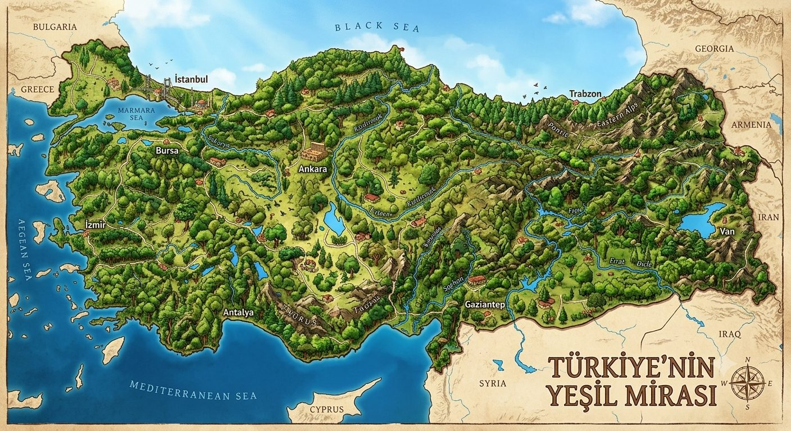

Yeşil Mirasımızı Keşfediyoruz
Bu platform, Türkiye'nin zengin biyolojik çeşitliliğini, 7 coğrafi bölgesine yayılan orman varlığını ve asırlık ağaç türlerini dijital ortamda derleyen açık bir doğa rehberidir.
Anadolu toprakları; Akdeniz'in Kızılçamlarından Karadeniz'in sisli dağlarında yetişen bin yıllık Porsuk Ağacına kadar muazzam bir floraya ev sahipliği yapıyor. Bu portal; doğaseverlere, öğrencilere ve araştırmacılara ağaç türlerini botanik künyeleri, yetişme koşulları ve anıtsal değerleriyle sunmak için tasarlandı.
Platformda Neler Bulabilirsiniz?
7 Coğrafi Bölge
İklim şartlarına göre şekillenen bölgesel bitki örtüsü analizleri.
Botanik Künyeler
Ağaçların familyaları, yaprak tipleri ve kullanım alanları.
Ağaçların En'leri
Türkiye'nin en yaşlı, en yüksek ve anıtsal değer taşıyan türleri.
Doğa Farkındalığı
Orman varlığımızı korumaya ve yeşil mirasa sahip çıkmaya yönelik bilinç.
Proje Hakkında & Geliştirici
Bu proje, web geliştirme teknolojilerine olan merak ile doğa sevgisi birleştirilerek tasarlanmıştır. Amaç, hem kullanıcı dostu bir arayüzle bilgi sunmak hem de modern web standartlarına uygun, modüler bir doğa portalı ortaya koymaktır.